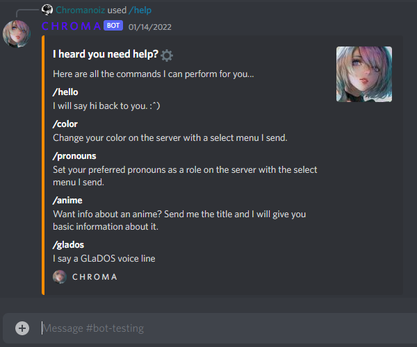
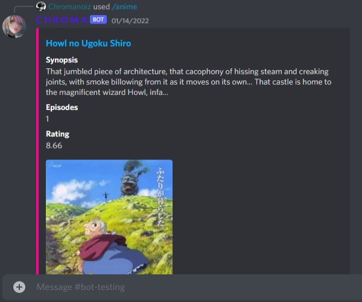
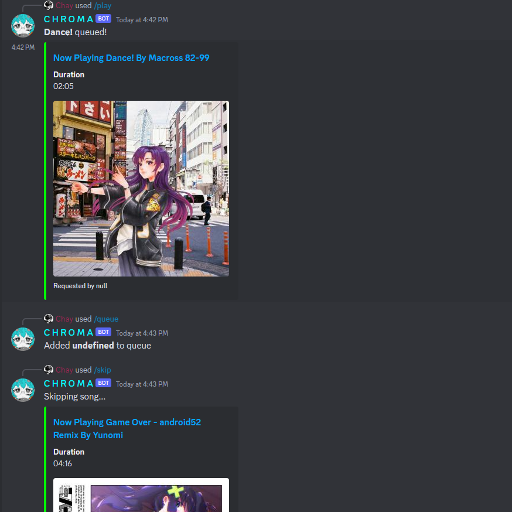
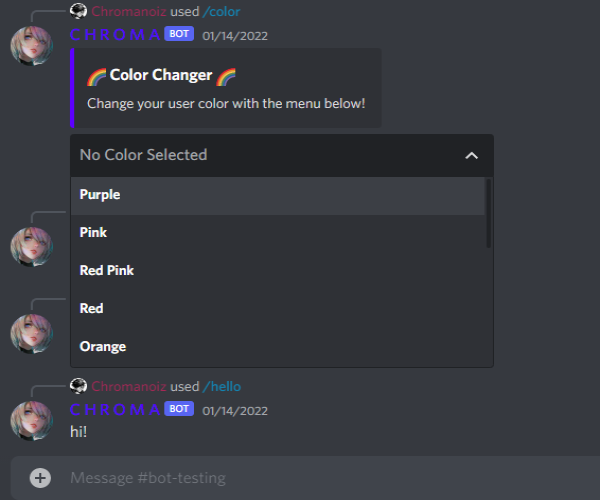

Developed a website in Angular for an artist client who wanted to advertise her art and have a place where patrons can easily
look over commission options, information, and her Terms of Service.
Gathered requirements and aesthetic direction for the website over multiple meetings, discussing the logistics of
registering the domain, hosting the website, and maintenance afterwards. Sent the client multiple updates on the progress
of development, and made changes iteratively based on feedback.
Utilized AWS's Route53 and Amplify services when registering the client's domain and hosting the website. Periodically
check in on the website and client to maintain and debug any problems that occur.
Client has found having the website streamlines her commissioning process and has seen an uptick in sales on her
Etsy shop since website was launched.
First time web development project in Angular to broaden skill set and learn more about the process and mechanics
of web infrastructure.
Researched and followed responsive, mobile-first web design practices. Learned how to use flex boxes to accommodate
multiple screen sizes, and utilized common frameworks used for web development - such as Bootstrap - in the process.
Figured out the logistics of registering domains and hosting websites through AWS's Route53 and Amplify services.
Built an ASP.NET Core minimal API deployed through AWS API Gateway & Lambda to integrate within the website to
fetch and display contact information securely.
Proactive about updating the website and redesigning as I become more comfortable with web development, refactoring
old code and modifying to follow modern web design practices. Website is currently in its second design iteration.
Personal Discord bot made in order to learn JavaScript, gain experience with integrating APIs into web projects, and
building a program that incorporates asynchronous architecture.
Implemented multiple capabilities such as member role selection, playing YouTube audio through voice channels with the
ytdl-core API, and listing information about anime through Jikan MAL API.
Constant iteration and debugging of features based on user feedback, along with migrations whenever there is a
new release of Discord's API.
Deployed on an AWS EC2 instance where it is daemonized and managed through PM2 process manager.

List of Commands

MyAnimeList Search

Music Player

Color and Pronoun Changer
Oct - Dec 2020
AI Development, Bug Fixing, and Animation Implementation in Video Game Development Project
Group video game development project of a 2D platformer game with unique health mechanics.
Implemented enemy AI using an A* Pathfinding package, as well as optimized the enemies’ damage, speed, and
placement throughout the level.
Implemented character sprites and animations.
Iteratively made changes and fixed bugs based on players’ feedback.
Worked collaboratively with 5 others using Git, and was the main source of help when merge conflicts occurred.
Apr - June 2021
Crux Compiler
Built a simple compiler that translates the Crux programming language into executable x86 assembly.
Utilized ANTLR to generate a parser for the specified Crux grammar to create a parse tree that is used to
create an Abstract Syntax Tree (AST).
Implemented a compile time type checker to catch any possible type errors.
Expanded my knowledge of the compiler pipeline from code to assembly and the possible inefficiencies that
may stem from programmer oversight
July - Sept 2020
Charting UI and Message Analysis for Stock Trading Bot
Took part along with 3 others in the development of a bot that uses Robinhood's / TD Ameritrade's API to trade
stocks based on announcements from a Discord server.
Worked with Finplot and Pandas packages to generate stock charts within a set period of time based on Yahoo stock
data that marked where the bot had bought and sold.
Implemented heuristic regex parsing of Discord messages to mark what messages were important and which were alerts
to buy and sell certain stocks.
Created unit tests for the bot in order to verify that the bot was categorizing messages correctly, and made
changes to message parsing if the bot had unexpected output.